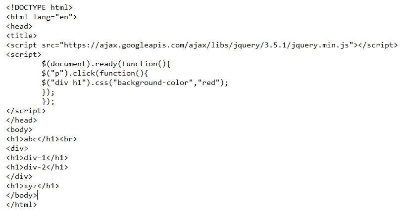
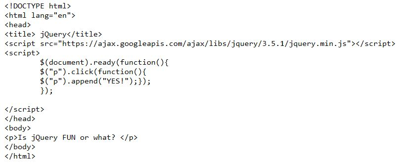

In jQuery terminology, what is the difference between the “jQuery function” and the “jQuery object”?
jQuery function: performs a defined set of operations following a user event.
jQuery object: is a data structure that contains a set of data values that can be returned as reesult of a jQuery function.
Write jQuery code to find all h1 elements that are children of a div element and make their background
color red.

Use a jQuery method to insert the text "YES!" at the end of the <p> element.
